Contributed by Jerry Clark
Photographs by Jerry Clark & Miles Lumbard
| Placer Gulch was formerly called Mastodon Gulch, named after the Mastodon Mine operations which were once located there. The wildflowers in Placer Gulch are among the most beautiful in the San Juans. |
| The Placer Gulch Road begins as the left turn at the intersection with the California Gulch Road about ½ mile above Animas Forks. The road leads to the Sound Democrat Mill which is being restored under the auspices of the Bureau of Land Management and continues to the Gold Prince Mine (originally the Sunnyside Extension) at the top of the gulch. At the top, you may return by retracing your original route, or continuing along the face of Treasure Mountain through Picayune Gulch to reach San Juan County Road #10 below Animas Forks. |
| Turning left coming from Animas Forks, the remains of the Gold Prince Tramway can be seen to the left on Treasure Mountain. The tramway was built in 1905 and ran 8,000 feet from the Gold Prince Mine to the tramway angle station and an additional 4,000 feet to the Gold Prince Mill in Animas Forks. |
| California Mountain at 13,184 feet can be seen on the right. Treasure Mountain on the left reaches a height of 12,783 feet. Standing and fallen tram towers can be seen throughout the gulch. These are the remains of the Gold Prince Tramway. Remains of the Evening Star Mine can be seen on the right with a recently worked mine dump to the left. |
| The remains of the Mastodon Mill can be seen on the left at a fork in the road. The Mastodon mill was built in 1885. The large mill structure on the road leading to the left is the Sound Democrat. Get out and check the creek before crossing, particularly early in the season. The banks are steep, but short, and should not present any difficulty if you're easy on the throttle. |
| The Sound Democrat Mill was originally built in 1905. It was powered by electricity. The mill processed ore from the Sound Democrat and Silver Queen mines located on the face of Treasure Mountain. The tramway to the Sound Democrat Mine was built in 1909. The lower tram station and its rock counterbalance boxes can be seen behind the mill. |
| The BLM is restoring the mill. The ore bins, stamp battery and Wilfley tables can be seen inside. Watch your step while you explore the mill, and respect the efforts going on here. Souvenir hunting is against the law. |
| As you return to the main road, you will pass more Gold Prince tram towers. In front of you are the Gold Prince Mine workings. Above are additional workings of the Gold Prince Mine. The road to Picayune Gulch is in view at this point. The large concrete foundation on the right side of the road supported the Gold Prince boarding house. A tram base is located next to the foundation. It is likely that supplies were sent up the tramway and off loaded at the boarding house. |
| Past the boarding house the road forks. The right fork leads to the remains of the Hanson Mill. It was a 20 stamp mill built in 1889 to process ore from the Sunnyside Extension Mine. The mill was run by steam power. A tram was built in 1893 to carry ore from the upper mine levels in the basin above the mill. The remains of the brick foundation for the mill's steam boiler can still be seen. A number of other structure remains are evident. |
| Returning to the junction, the road to Picayune Gulch switches back up around Treasure Mountain. This section of road is more difficult than the lower portion. You will enter the upper basin after moving through three switchbacks. After the road circles around the basin a look back will reveal a commanding view of Placer Gulch and Engineer Mountain. The Engineer Pass Road will be visible on the side of Engineer Mountain. |
| As you cross the saddle you will be looking at Treasure Mountain. Hanson Peak will be visible behind you at this point. Past the saddle you will cross over into the head of Picayune Gulch. Follow the road down to intersect San Juan County Road 10 between Animas Forks and Eureka. |
|
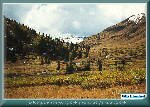 |
Looking up Placer Gulch from
California Gulch (130k) |

|
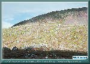 |
Tower of the Gold Prince tramway
dot the side of Treasure Mountain (137k) |

|
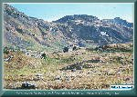 |
You can hardly tell the old mill
from a rock outcropping (136k) |

|
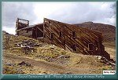 |
The Sound Democrat Mill
Placer Gulch (117k) |

|
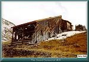 |
Exterior view of the Sound Democrat Mill
Placer Gulch (126k) |

|
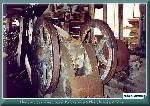 |
The Jaw Crusher, used to break
up the large chunks of ore (124k) |

|
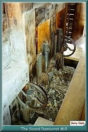 |
These are the gates on the
outlets of the ore bins (135k) |

|
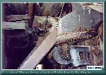 |
One of the mechanical feeders
that fed ore to the stamps (113k) |

|
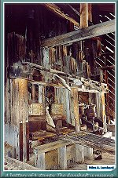 |
A battery of four stamps
The driveshaft is missing (157k) |

|
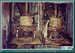 |
The business end of the stamps
(126k) |

|
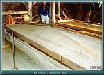 |
A Wilfley Table
(127k) |

|
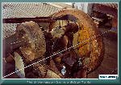 |
The drive mechanism of
the Wilfley Table (114k) |

|
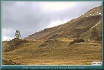 |
Tram towers
Placer Gulch (97k) |

|
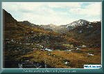 |
The remains of the Gold Prince Mine
(102k) |

|
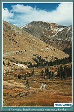 |
The view towards Animas Forks from
the bottom of Placer Gulch (135k) |


|
The Narrow Gauge Circle is written, maintained,and hosted by: Mark L. Evans Send Comments to:Mark L. Evans All original materials, text, and digital images Copyright © 1996-2017 Mark L. Evans. All rights reserved. Imitation is said to be the "sincerest" form of flattery.....Please don't flatter us without permission. |